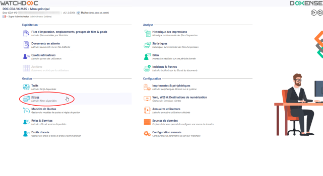
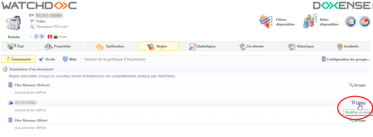
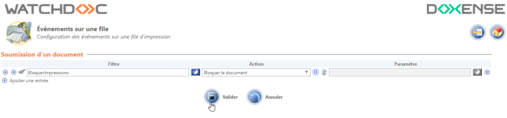

Principe
Le 'spool' est une file d'attente dans laquelle sont conservés les travaux d'impression avant envoi au périphérique.
Le mot 'spool' est, à l'origine, l'acronyme de 'simultaneous processing operations on line'. Le spool d'impression désigne le fichier d'édition envoyé au périphérique d'impression. Il regroupe l'ensemble des ordres que l'imprimante doit exécuter pour mener à bien l'impression d'un ou plusieurs documents.
Il peut être utile de disposer de ces fichiers de 'spools' pour deux raisons distinctes :
-
pour comparer les informations qu'il contient et, ainsi, valider les données remontées par Watchdoc ;
-
lorsqu'une anomalie de comptage par Watchdoc est constatée, le spool est utilisé par l'équipe Support de Doxense pour analyser le problème.
Prérequis
Avant de procéder à la capture des spools, vérifiez les deux prérequis suivants :
-
vous disposez d'un accès au serveur d'impression avec un compte administrateur ;
-
vous accédez à l'interface d'administration de Watchdoc en tant qu'administrateur.
Méthodes
Il convient tout d'abord de vérifier si l'anomalie est reproductible ou non.
-
Si l'anomalie est reproductible, deux méthodes sont disponibles pour capturer le spool :
-
une méthode simple consistant à suspendre la file d'impression concernée ;
-
une méthode discrète reposant sur un filtre bloquant le spool avant impression (cf. Capturer les spools - Anomalie reproductible).
-
-
Si l'anomalie n'est pas reproductible, il convient de paramétrer le serveur Watchdoc afin qu'il permette l'archivage temporaire du spool.
Procédure
Pour capturer les spool afin d'analyser une anomalie reproductible, il convient tout d'abord de "bloquer" ce spool.
Méthode simple
-
rendez-vous sur le serveur d’impression ;
-
dans le gestionnaire d'impression, cliquez-droit sur la file à analyser ;
-
dans la liste des actions, cliquez-droit et sélectionnez "suspendre" ;
-
mettez la file d’impression à analyser en pause.
Méthode exploitant un filtre
-
Authentifiez-vous dans l'interface d'administration de Watchdoc en tant qu'administrateur;
-
depuis le Menu Principal > section Gestion, cliquez sur Filtres :

-
dans la liste des filtres disponibles, cliquez sur le bouton Créer un nouveau filtre ;
-
dans l'interface Création d'un filtre, en section Filtre, remplissez le champ Nom avec un nom explicite (par exemple : "BloquerImpressions") ;
-
Paramétrez une Règle permettant de rejeter les impression provenant d'un identifiant d'utilisateur prédéfini habilité à procéder au test :
-
en Condition, sélectionnez "Utilisateur" > "Le nom de l'utilisateur est"... ;
-
dans le champ Paramètre, saisissez l'identifiant de l'utilisateur habilité à mener le test (logiquement, vous pouvez utiliser le vôtre) ;
-
Si vrai, activez l'action "Sélectionner" ;
-
Si faux, activer l'action "Rejeter".
-
-
Cliquez sur le bouton Créer pour valider le filtre.
-
Revenez au Menu principal puis, dans la section Exploitation, cliquez sur Files d'impression ;
-
dans la liste des files, sélectionnez la file que vous souhaitez analyser ;
-
dans l'interface de gestion de la file, cliquez sur le bouton Règles :
{kind=link}
-
dans l'onglet Evènements, cliquez sur le bouton Editer de la file d'impression :

-
dans la liste Evènements sur la file, sélectionnez le filtre précédemment créé, puis appliquez l'action "Bloquer le document" ;
-
cliquez sur le bouton pour valider l'ajout du filtre permettant de bloquer les spools sur cette file.
